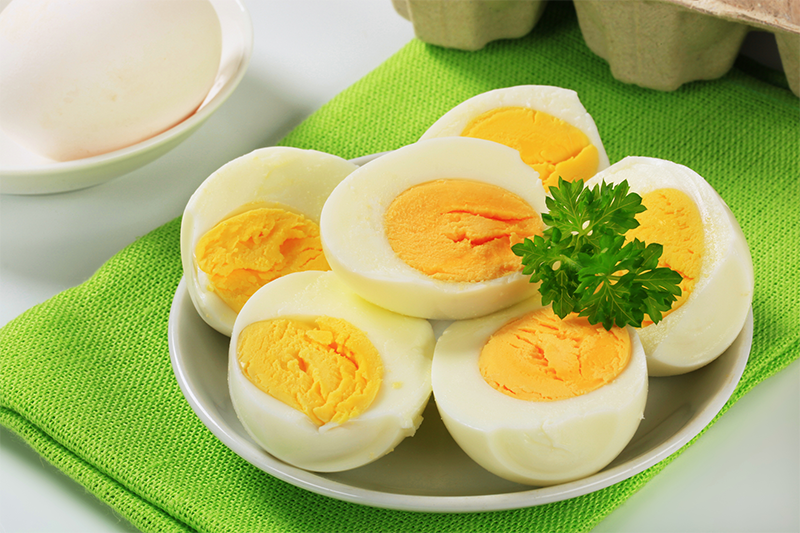
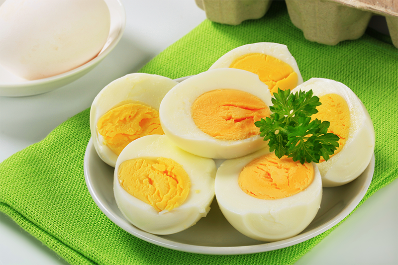
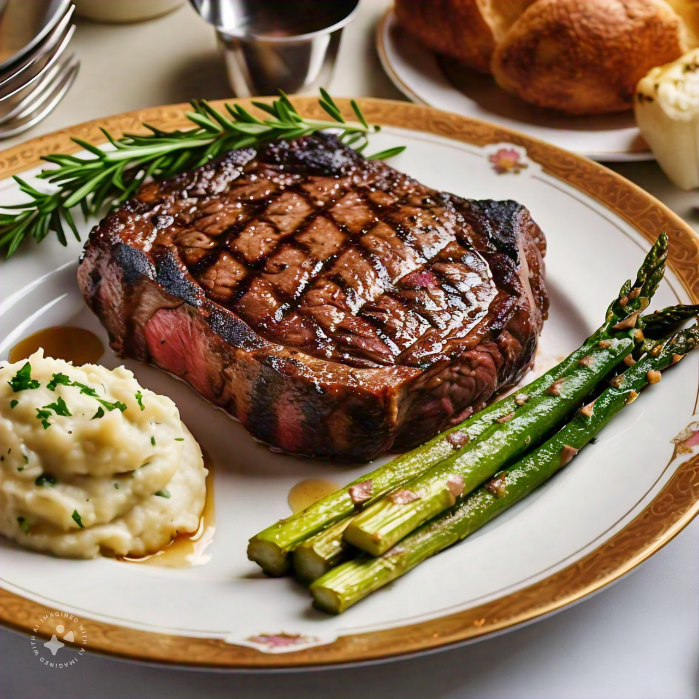
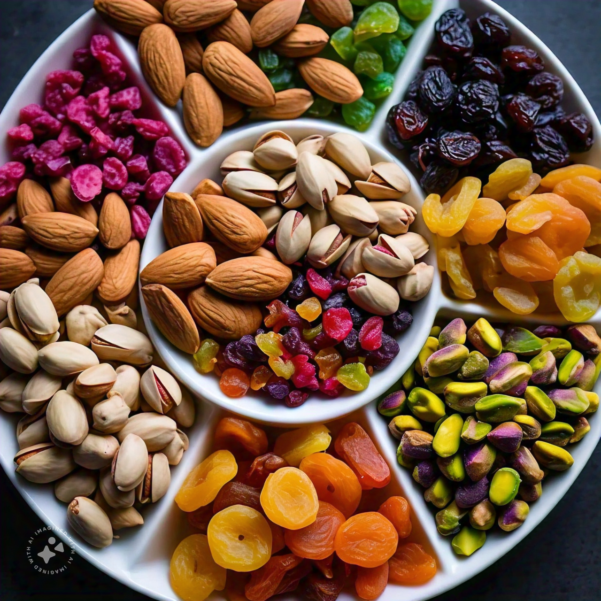

Benefits of Eggs for Fitness
- High-Quality Protein: Eggs provide a complete source of protein, essential for muscle repair and growth after workouts.
- Muscle Recovery: The amino acids in eggs help repair muscle tissue and promote recovery, making them a great post-workout food.
- Nutrient Density: Eggs are packed with vitamins and minerals, including B vitamins, which play a crucial role in energy metabolism.
- Satiety: The protein and healthy fats in eggs can help keep you feeling full, which can aid in weight management and prevent overeating.
- Healthy Fats: Eggs contain omega-3 fatty acids (especially in enriched varieties), which support heart health and may reduce inflammation.
- Convenient and Versatile: Eggs are easy to prepare and can be included in various meals, making them a convenient option for fueling workouts and recovery.

Benefits of Protein-Rich Meat for Fitness
- Muscle Growth: Protein from meat is essential for building and repairing muscle tissue, supporting hypertrophy and strength gains.
- Recovery: Consuming protein after workouts helps reduce muscle soreness and accelerates recovery.
- Satiety: High-protein meat can help you feel full longer, aiding in weight management and preventing overeating.
- Nutrient-Rich: Meat provides important nutrients like iron, zinc, and B vitamins, which are vital for energy metabolism and overall health.
- Improved Performance: Adequate protein intake supports energy levels and endurance, enhancing overall athletic performance.
- Fat Loss: A higher protein intake can boost metabolism and promote fat loss while preserving lean muscle mass.
- Variety of Sources: Different types of meat (chicken, beef, turkey, pork) offer diverse flavors and nutritional profiles, making it easy to include in various diets.
Benefits of Dry Fruits
- Nutrient Dense: Dry fruits are rich in vitamins, minerals, and antioxidants, providing essential nutrients in a compact form.
- High in Fiber: They are a great source of dietary fiber, which aids digestion and helps maintain bowel health.
- Heart Health: Many dry fruits contain healthy fats and antioxidants that support heart health and reduce cholesterol levels.
- Energy Boost: Their natural sugars provide a quick source of energy, making them ideal for snacks before or after workouts.
- Weight Management: Dry fruits can promote feelings of fullness, helping with appetite control and weight management.
- Bone Health: Certain dry fruits, like figs and almonds, are good sources of calcium and magnesium, supporting bone health.
- Versatile Snack: They can be easily added to meals, used in baking, or enjoyed on their own as a convenient snack.
